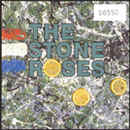
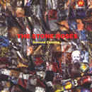
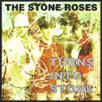
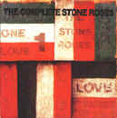

The Albums
The Stone Roses

CD ORE CD502
1. "I Wanna Be Adored" (4:52)
2. "She Bangs the Drums" (3:42)
3. "Waterfall" (4:37)
4. "Don't Stop" (5:17)
5. "Bye Bye Badman" (4:00)
6. "Elizabeth My Dear" (0:59)
7. "(Song For My) Sugar Spun Sister" (3:25)
8. "Made Of Stone" (4:10)
9. "Shoot You Down" (4:10)
10. "This Is the One" (4:58)
11. "I Am the Resurrection" (8:12)
The Second Coming

CD GED 24503
1. "Breaking Into Heaven" (11:18)
2. "Driving South" (5:09)
3. "Ten Storey Love Song" (4:29)
4. "Daybreak" (6:46)
5. "Your Star Will Shine" (2:56)
6. "Straight To the Man" (3:15)
7. "Begging You" (4:56)
8. "Tightrope" (4:30)
9. "Good Times" (5:38)
10. "Tears" (6:53)
11. "How Do You Sleep (4:55)
12. "Love Spreads" (5:46)
90. "The Foz" (6:25)
Turns To Stone

CD ORE CD 521
1. "Elephant Stone" (4:48)
2. "The Hardest Thing In the World" (2:39)
3. "Going Down" (2:46)
4. "Mersey Paradise" (2:44)
5. "Standing Here" (5:05)
6. "Where Angels Play" (4:15)
7. "Simone" (4:24)
8. "Fools Gold" (9:53) CD ORE CD 535
The Complete Stone Roses

1. "So Young" (3:30)
2. "Tell Me" (3:50)
3. "Sally Cinnamon" (2:50)
4. "Here It Comes" (2:40)
5. "All Across the Sands" (2:40)
6. "Elephant Stone" (3:00)
7. "Full Fathom Five" (3:18)
8. "The Hardest Thing In the World" (2:39)
9. "Made Of Stone" (4:11)
10. "Going Down" (2:46)
11. "She Bangs the Drums" (3:42)
12. "Mersey Paradise" (2:44)
13. "Standing Here" (5:05)
14. "I Wanna Be Adored" (3:28)
15. "Waterfall" (3:36)
16. "I Am the Resurrection" (3:41)
17. "Where Angels Play" (4:15)
18. "Fools Gold" (4:15)
19. "What the World Is Waiting For" (3:55)
20. "Something's Burning" (3:37)
21. "One Love" (3:40)